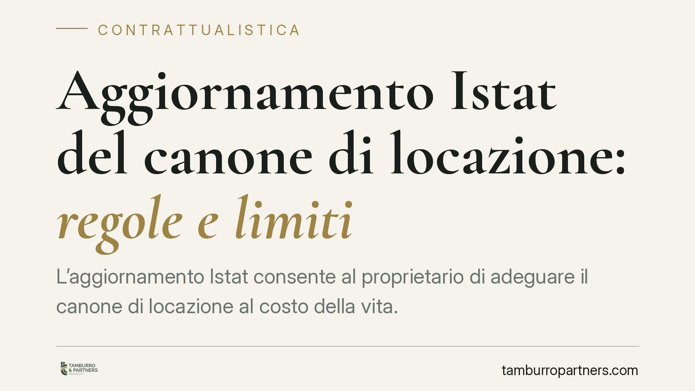

Aggiornamento Istat del canone di locazione: regole e limiti
L'aggiornamento Istat consente al proprietario di adeguare il canone di locazione al costo della vita. Non è però automatico: serve una richiesta scritta e vale il limite del 75% della variazione dell'indice. Chiarire questi passaggi evita contestazioni e somme pretese senza titolo, sia per chi affitta sia per chi abita l'immobile.

Il caso
L'aumento del canone di locazione legato all'inflazione è una delle voci che più spesso genera dubbi tra proprietari e inquilini. Molti ritengono che l'adeguamento scatti da solo, di anno in anno. Non è così. L'aggiornamento Istat è un diritto del locatore che va esercitato con precise formalità, e nei limiti fissati dalla legge.
Comprendere il meccanismo serve a due scopi: al proprietario, per pretendere l'importo corretto; all'inquilino, per verificare che le somme richieste siano dovute.
Inquadramento normativo
La disciplina di riferimento è l'art. 32 della Legge 27 luglio 1978, n. 392 (cosiddetta legge sull'equo canone). La norma consente l'aggiornamento del canone in base alle variazioni del costo della vita rilevate dall'indice Istat dei prezzi al consumo per le famiglie di operai e impiegati (indice FOI).
Due sono i punti fermi. Il primo: l'adeguamento non può superare il 75% della variazione accertata dall'Istat nell'anno precedente. Se l'inflazione registrata è, ad esempio, del 4%, l'aumento massimo applicabile al canone è del 3%.
Il secondo: l'aggiornamento non è automatico. Il proprietario deve richiederlo per iscritto all'inquilino. La Cassazione ha chiarito che la richiesta non richiede formule sacramentali, ma deve manifestare in modo chiaro la volontà di ottenere l'adeguamento. In assenza di richiesta, il canone resta invariato: le annualità non richieste non maturano in modo retroattivo illimitato.
La giurisprudenza di legittimità ha inoltre precisato che la richiesta di aggiornamento può essere formulata anche cumulativamente per più annualità pregresse, fermo il limite ordinario della prescrizione quinquennale per i canoni e i relativi accessori.
Come si calcola
Il calcolo parte dal canone base pattuito nel contratto. Su di esso si applica la variazione percentuale dell'indice FOI relativa al periodo di riferimento, ridotta al 75%.
Alcuni chiarimenti pratici:
- La variazione va presa dalla tabella Istat corrispondente al mese preso a riferimento nel contratto (di norma il mese di decorrenza).
- Il limite del 75% è inderogabile in senso peggiorativo per l'inquilino: clausole che prevedano l'adeguamento pieno del 100% sono, sul punto, nulle.
- Nelle locazioni a canone concordato e in alcuni regimi speciali possono valere criteri diversi: conviene sempre verificare il tipo di contratto.
Implicazioni pratiche
Per il proprietario, l'aggiornamento è un'opportunità, non un diritto che si attiva da solo. Chi dimentica di inviare la richiesta rinuncia di fatto all'aumento per quell'anno. Le somme non richieste nei termini non possono essere recuperate senza limiti.
Per l'inquilino, la richiesta di pagamento va sempre confrontata con i dati Istat effettivi e con il tetto del 75%. Un aumento applicato in automatico in busta o richiesto oltre la prescrizione può essere contestato.
Un errore frequente è considerare l'adeguamento come parte integrante e automatica del canone: da qui nascono contenziosi in cui il proprietario pretende arretrati per più annualità mai richieste, o l'inquilino paga aumenti superiori al dovuto.
Cosa fare in concreto
- Verifica il contratto: controlla se è prevista la clausola di aggiornamento Istat e quale mese di riferimento indica.
- Formalizza la richiesta (proprietario): invia comunicazione scritta, preferibilmente con raccomandata o PEC, indicando l'indice applicato e l'importo aggiornato.
- Ricalcola l'importo (inquilino): confronta la cifra richiesta con la variazione FOI ufficiale ridotta al 75%.
- Presta attenzione ai termini: ricorda la prescrizione quinquennale per i canoni e gli accessori.
- Conserva le comunicazioni: la prova della richiesta e della data è decisiva in caso di controversia.
Nei casi dubbi — clausole ambigue, arretrati pluriennali, contratti a canone concordato — consigliamo una verifica puntuale prima di versare o pretendere somme.
Disclaimer
Contributo informativo a cura di Tamburro & Partners - Avv. Giuseppe Tamburro. Non costituisce parere legale.
Ogni contratto ha il suo equilibrio.
Se vuoi una revisione delle clausole o una redazione su misura, scrivi allo studio. Ti rispondiamo entro un giorno lavorativo.